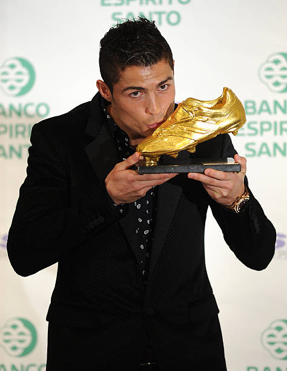

ACHIEVENMENTS

GOLDEN FOOTBALL
Ronaldo has played in multiple international tournaments,
Including the FIFA World Cup, UEFA European Championship,
for the goals and the UEFA Nations League.

GOLDEN BOOT
Cristiano Ronaldo dos Santos Aveiro was born
on 5 February 1985 in Madeira, Portugal.
He plays as a forward for the Saudi Pro League and the following league

CHAMPIONS LEAGUE
Cristiano Ronaldo dos Santos Aveiro was born
the FIFA World Cup, UEFA European Championship,
He plays as a forward for the Saudi Pro League respective goals for ecvery match